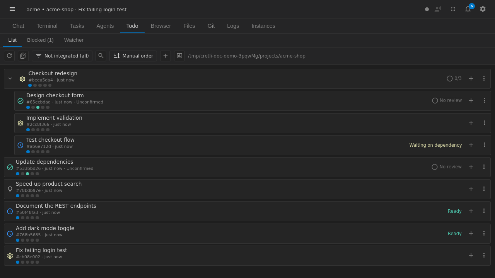

Todo and plans
Create a todo for a concrete piece of work, giving it a clear goal and acceptance criteria. Add a plan describing the changes and how the result will be checked. You can prepare a task yourself or ask an agent to draft it, then read the proposal before execution.
Status and approval
Use idea for an unshaped request, ready when it can start, doing while work is active, done after completion, and deferred for postponed work. A task waiting for plan approval can show a waiting indicator even though its saved status is ready.
Plan approval is human-only. An agent can write or revise a plan, but cannot approve it. When plan approval is required, an approval on the task or an ancestor opens the execution gate. Reviewing a plan does not grant approval, and approval does not prove the implementation is correct.
Order and review
Split a larger task into children when they have distinct outcomes. Children run sequentially by default: later work waits for the earlier child's completion. Choose parallel execution only for independent work. Read blockers when a ready task does not start.
The review badge comes from recorded reviews and can be pending, passed, failed, or stale. Open the findings and test results; changed material can invalidate an earlier pass. A plan review and a code review answer different questions.
Work completed in an isolated task checkout may still await integration into the project. A successful review alone does not make those files available to the next sequential task. Review the integration result as well as the task report.
